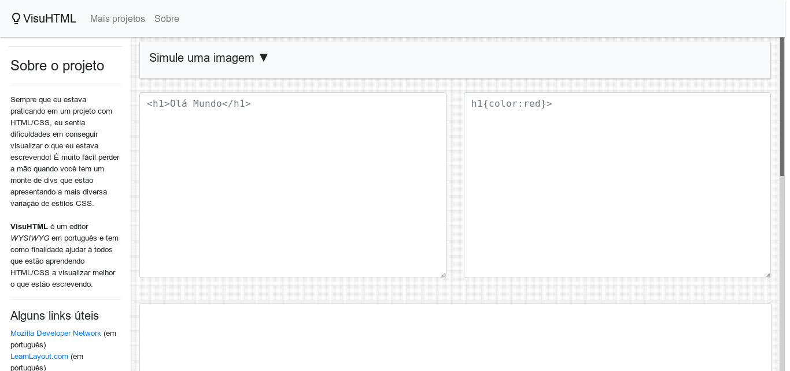

<link rel="stylesheet" href="https://maxcdn.bootstrapcdn.com/bootstrap/4.0.0/css/bootstrap.min.css">
<link rel="stylesheet" href="css/styles.css">

<main role="main">

      <section class="jumbotron text-center">
        <div class="container">
          <h1 class="jumbotron-heading">Meus projetos</h1>
          <p class="lead text-muted">Aqui, é possível encontrar alguns pequenos projetos feitos por mim. Para mais informações, você poderá ver uma breve descrição do projeto, assim como acessar o próprio projeto e seu código-fonte</p>
          <p>
            <a href="http://github.com/LeonNasc" target="_self" class="btn btn-primary my-2">Meu GitHub</a>
            <a href="#projetos" class="btn btn-secondary my-2">Ver Projetos</a>
          </p>
        </div>
      </section>

      <div id="projetos" class="album py-5 bg-light">
        <div class="container">

          <div class="row">
            <div class="col-md-6">
              <div class="card mb-4 box-shadow">
                
                <div class="card-body">
                  <h5 class="card-title">PACO</h5>
                  <p class="card-text">PACO, ou Programa de Acompanhamento Farmacoterapêutico, é uma ferramenta web construída em HTML, CSS, Javascript e PHP, utilizando a arquitetura MVC para gerenciar um banco de dados PostgreSQL.
                  Tem como finalidade auxiliar farmacêuticos e outros profissionais de saúde a acompanhar as prescrições e a evolução de pacientes clínicos.</p>
                  <div class="d-flex justify-content-between align-items-center">
                    <div class="btn-group">
                      <button type="button" class="btn btn-sm btn-outline-secondary">Visualizar</button>
                      <button type="button" class="btn btn-sm btn-outline-secondary">GitHub</button>
                    </div>
                    <small class="text-muted">PHP, JS, Web</small>
                  </div>
                </div>
              </div>
            </div>

              <div class="col-md-6">
                <div class="card mb-4 box-shadow">
                  
                  <div class="card-body">
                    <h5 class="card-title">VisuHTML</h5>
                    <p class="card-text">VisuHTML é um editor simples WYSIWYG, construído em somente HTML, CSS e Javascript, que tem como finalidade visualizar em tempo real alterações de código HTML e CSS. Tem como peculiaridade o fato de todo a lógica ser executada no front-end, utilizando <i>somente HTML, CSS e JS vanilla</i></p>
                    <div class="d-flex justify-content-between align-items-center">
                      <div class="btn-group">
                        <button type="button" class="btn btn-sm btn-outline-secondary">Visualizar</button>
                        <button type="button" class="btn btn-sm btn-outline-secondary">GitHub</button>
                      </div>
                      <small class="text-muted">PHP, JS, Web</small>
                    </div>
                  </div>
                </div>
              </div>

          </div> <!--row-->
        </div><!--container-->
      </div> <!--album-->
    </div>

    </main>
